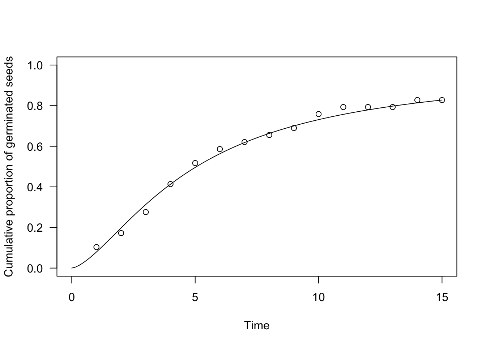
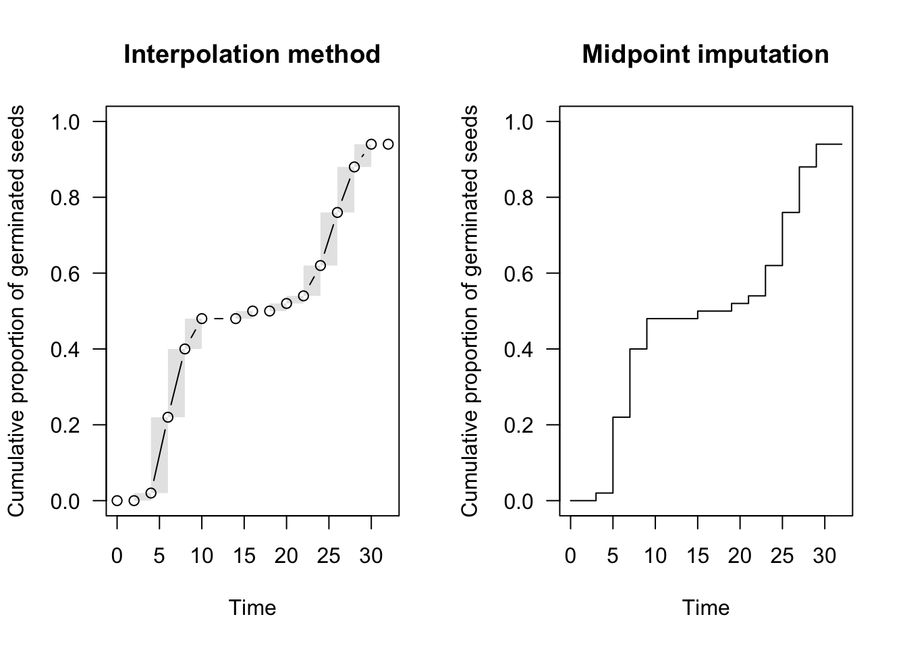
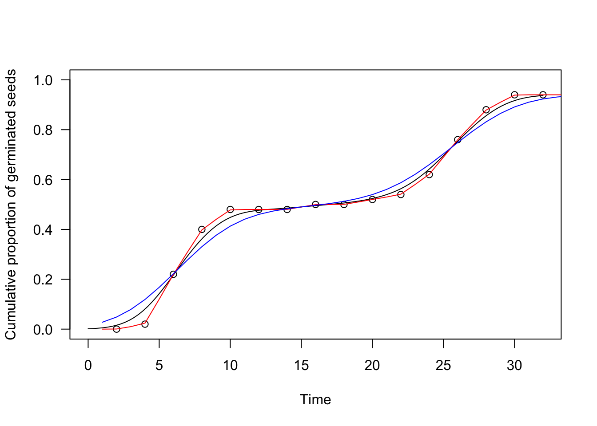

Section 4 Time-to-event models for seed germination/emergence
The individual seeds within a population do not germinate/emerge altogether at the same moment; this is an undisputed fact, resulting from seed-to-seed variability in germination/emergence time. Accordingly, the primary reason why we organise germination assays is to describe the progress to germination for the whole population, by using some appropriate time-to-event model.
What is a time-to-event model? It is a model that describes the probability that the event (germination/emergence, in our case) occurs at any time \(t\) or before that time:
\[ P(t) = \Phi(T \le t)\]
In practice, it may be easier to think that \(P(t)\) is the proportion of germinated/emerged seeds at time \(t\). In statistical terms, \(\Phi\) is a Cumulative Distribution Function (CDF), with the following characteristics:
- the time \(t\) is constrained from 0 to +\(\infty\)
- the response \(P(t)\) is constrained from 0 to 1
- the response \(P(t)\) is monotonically increasing
- due to the possible presence of a final fraction of individuals without the event (e.g., ungerminated seeds), \(P(t)\) may not necessarily reach 1.
The first task to fit a time-to-event model is to select a form for \(\Phi\). In general, we have three possibilities:
- a parametric maximum likelihood model (ML)
- a non-parametric maximum likelihood model (NPMLE)
- a kernel density estimator (KDE)
Let’s have a closer look at those three options.
4.1 Parametric time-to-event models
The CDF for parametric time-to-event models is characterised by a pre-defined, usually sigmoidal, shape. Right-skewed CDFs have proven useful, such as the log-normal, log-logistic or Weibull, which are only defined for \(t > 0\) (see #1 above). These CDFs contain a location (\(e\)) and a scale (\(b\)) parameter: the former is a measure of central tendency (e.g., the median for the log-logistic and log-normal CDFs) while the latter is a measure of how fast the curve grows during time. For seed germination/emergence, most often, a third parameter is necessary, to describe the fraction of dormant or nonviable seeds (\(0 < d \leq 1\)). As an example, we show a log-logistic CDF, that is also used in ecotoxicology, for dose-response studies:
\[P(t) = \frac{d}{1 + exp\left\{ b \right[ \log(t) - log(e)\left] \right\}}\]
Fitting the above parametric model implies that, based on the observed data, we need to assign a specific value to the parameters \(b\), \(d\) and \(e\), so that an appropriate likelihood function is maximised (Maximum Likelihood estimation). Relating to the estimation process, we should necessarily take into account that germination/emergence data are censored data; neglecting this fact has some important consequences, as I have described in this post.
In practice, parametric time-to-event models can be fitted by the drmte() function in the ‘drcte’ package. As an example, let’s consider a factitious dataset relating to an assay where the germinations of 30 seeds were counted daily for 15 days. A log-logistic time-to-event model can be easily fit as follows:
dataset <- read.csv("https://www.casaonofri.it/_datasets/oneFlush.csv")
head(dataset)
## timeBef timeAf counts
## 1 0 1 3
## 2 1 2 2
## 3 2 3 3
## 4 3 4 4
## 5 4 5 3
## 6 5 6 2
library(drcte)
te.mod <- drmte(counts ~ timeBef + timeAf, fct = LL.3(),
data = dataset)
# Alternative
# te.mod <- drm(counts ~ timeBef + timeAf, fct = LL.3(),
# data = dataset, type = "event")We can see that we have directly considered the observed counts as the response variable, with no preliminary transformation. Furthermore, we have two predictors that represent the extremes of each time interval (‘timeBef’ and ‘timeAf’), by which we associate each count to the whole uncertainty interval during which germinations took place and not to a precise time instant. In other words, we fully respect our censored data.
The very same model can be fitted by using the drm() function in the ‘drc’ package, although we should add the argument type = "event", as this latter package is not specific to time-to-event methods.
The usual coef(), summary(), print() and plot() methods can be used for ‘drcte’ objects as for any other model object in R.
summary(te.mod)
##
## Model fitted: Log-logistic (ED50 as parameter) with lower limit at 0
##
## Robust estimation: no
##
## Parameter estimates:
##
## Estimate Std. Error t-value p-value
## b:(Intercept) -1.52553 0.44166 -3.4541 0.0005521 ***
## d:(Intercept) 0.97842 0.16027 6.1048 1.03e-09 ***
## e:(Intercept) 4.91400 1.68058 2.9240 0.0034558 **
## ---
## Signif. codes: 0 '***' 0.001 '**' 0.01 '*' 0.05 '.' 0.1 ' ' 1
plot(te.mod, ylim = c(0, 1), xlim = c(0, 15),
xlab = "Time", ylab = "Cumulative proportion of germinated seeds")
4.2 Nonparametric time-to-event models
In some cases we are not willing to assume that the germination curve has a certain predefined shape, but we need an extra degree of flexibility. For example, emergences may proceed in successive flushes that are not easily described by using a sigmoidal curve. In these cases, we can fit a non-parametric model, whose shape is not pre-defined, but it is built by closely following the observed data. In survival analyses, time-to-event curves for interval censored data are estimated by using Nonparametric Maximum Likelihood Estimators (NPMLE), that are potentially interesting also for plant science.
For example, we can consider another factitious dataset, where the germination took place in two distinct flushes; a non-parametric maximum likelihood model can be fit by using the NPMLE() function, as shown in the box below.
dataset <- read.csv("https://www.casaonofri.it/_datasets/twoFlushes.csv")
head(dataset)
## timeBef timeAf nEmerg
## 1 0 2 0
## 2 2 4 1
## 3 4 6 10
## 4 6 8 9
## 5 8 10 4
## 6 10 12 0
te.npmle <- drmte(nEmerg ~ timeBef + timeAf, fct = NPMLE(),
data = dataset)
summary(te.npmle)
##
## Model fitted: NPML estimator for time-to-event data
##
## Robust estimation: no
##
## Turnbull's intervals and masses:
##
## count pdf cdf Naive.SE
## 1.(2,4] 1.00 0.02 0.02 0.0198
## 1.(4,6] 10.00 0.20 0.22 0.0586
## 1.(6,8] 9.00 0.18 0.40 0.0693
## 1.(8,10] 4.00 0.08 0.48 0.0707
## 1.(14,16] 1.00 0.02 0.50 0.0707
## 1.(18,20] 1.00 0.02 0.52 0.0707
## 1.(20,22] 1.00 0.02 0.54 0.0705
## 1.(22,24] 4.00 0.08 0.62 0.0686
## 1.(24,26] 7.00 0.14 0.76 0.0604
## 1.(26,28] 6.00 0.12 0.88 0.0460
## 1.(28,30] 3.00 0.06 0.94 0.0336
## 1.(32,Inf) 3.00 0.06 1.00 0.0000
par(mfrow = c(1,2))
plot(te.npmle, ylim = c(0, 1),
xlab = "Time", ylab = "Cumulative proportion of germinated seeds",
main = "Interpolation method", npmle.points = T)
plot(te.npmle, ylim = c(0, 1),
xlab = "Time", ylab = "Cumulative proportion of germinated seeds",
npmle.type = "midpoint", shading = F,
main = "Midpoint imputation")
With NPMLE, the time-to-event curve is only defined at the end of each time interval, while it is undefined elsewhere and it is (optionally) represented by a shaded area (Figure above, left). This shaded area reflects the uncertainty due to censoring.
Although we cannot know at what moment the nonparametric curve went up within the grey interval, we can make some reasonable assumptions. For example, we could assume that events are evenly spread within the interval, which is the approach taken in the ‘interval’ package (Figure above, left panel). In the ‘survival’ package and, most commonly, in survival analysis, it is assumed that the curve goes up in the middle of the interval (midpoint imputation; Figure above, right panel).
4.3 Kernel density estimators
NPMLEs are very flexible and they can be used to describe the progress to germination/emergence with, virtually, every type of datasets, also when the events took place in distinct flushes. However, we may be reluctant to accept a time-to-event curve with a stairstep shape, especially for prediction purposes. A further possibility to describe the time to event curve with a smooth and flexible model is to use a so-called Kernel Density Estimator (KDE). A KDE is built by considering the observed data, a Kernel function (usually gaussian) and a bandwith value, that controls the degree of smoothing; a nice post to see how Kernel density estimation works in practice can be found at this link here.
In the box below we show that a KDE can be fitted to the observed data (same example as above) by using the drmte() function and setting the ‘fct’ argument to KDE(). Please, note that this type of KDE is specifically modified to comply with censoring.
te.kde <- drmte(nEmerg ~ timeBef + timeAf, fct = KDE(),
data = dataset)
summary(te.kde)
##
## Model fitted: Kernel estimator for the distribution function
##
## Robust estimation: no
##
## Bandwidth estimates:
##
## Estimate
## h:(bandwidth) 1.7871
plot(te.kde, ylim = c(0, 1),
xlab = "Time", ylab = "Cumulative proportion of germinated seeds")
paf <- KDE.fun(seq(1,35, 1), dataset$timeBef, dataset$timeAf, dataset$nEmerg,
h = 0.5)
lines(paf ~ seq(1,35, 1), col = "red")
paf <- KDE.fun(seq(1,35, 1), dataset$timeBef, dataset$timeAf, dataset$nEmerg,
h = 3.0)
lines(paf ~ seq(1,35, 1), col = "blue")
We have augmented the above graph with three estimators: the blue one has a bandwidth \(h = 3\), the red one has \(b = 0.5\) and the black one has \(b = 1.7871\). Our aim was to show the effect of bandwidth selection on the resulting time-to-event curve, although it is usually necessary to apply an appropriate algorithm for the selection. The function drmte(), by default, uses the AMISE method and, unless you know what you are doing, we recommend that you stick to such an algorithm.
4.4 ML, NPMLE or KDE?
There is no rule to select the type of time-to-event model for seed germination/emergence and you will have to make your own choice and defend it at the publication stage. As a swift suggestion, I would say that a parametric model is to be preferred, unless it shows some visible signs of lack of fit.
Whatever model you select, fitting a time-to-event model may be the most unambiguous way to describe the progress to germination/emergence. In a future post, we will see that we can also compare time-to-event models for different experimental treatments and or environmental conditions, which is, most often, the central step in our process of data analyses, for seed germination/emergence assays.